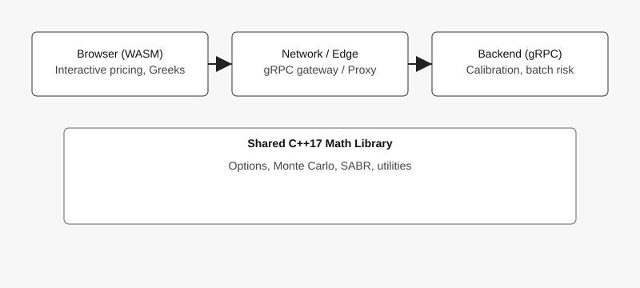
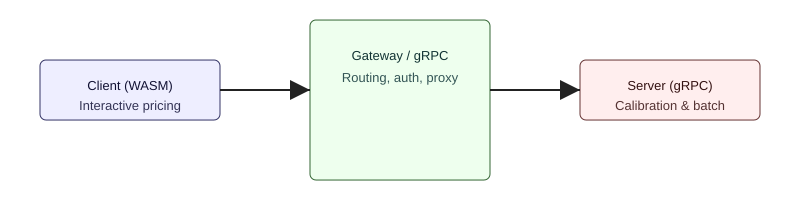

Serverless Finance: Moving Computational Finance From the Server to the Browser
This series explores whether modern browsers can run production-grade quantitative finance workloads using WebAssembly, when you need a backend, and how a hybrid WASM + gRPC architecture can get the best of both worlds.
Overview
WebAssembly (WASM) lets you compile C++ numerical code to run inside a browser tab. For interactive pricing — single-option evaluation, small Monte Carlo runs, and Greeks — WASM delivers responsive UX with minimal server load. For heavy calibration, batch risk, or multi-core parallelism, a gRPC backend remains the right choice.
Architecture

The project includes three targets:
- FinWasm — browser-only via Emscripten; interactive pricing lives here.
- FinGrpc — native gRPC microservice for calibration and batch jobs.
- FinFull — hybrid: WASM frontend with gRPC backend for heavy tasks.
Workflow

In practice: quick slider-driven pricing runs in WASM; the client calls gRPC for long optimizations, large Monte Carlo runs, and shared market data.
Key takeaways
- WASM is production-ready for interactive compute (sub-100ms tasks).
- Use gRPC when you need multi-core performance, large heap, or centralized state.
- Hybrid models yield the best UX and cost profile: most interactions stay local; servers handle the heavy tails.